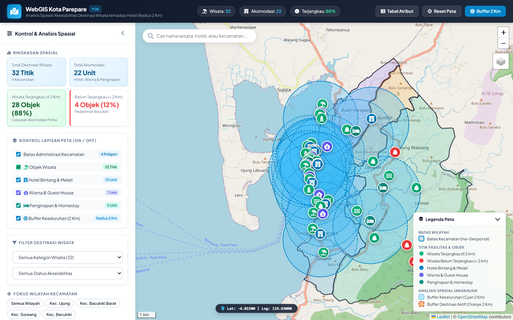
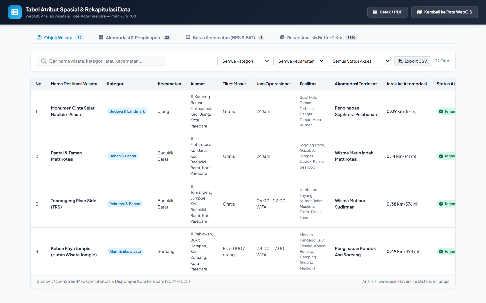
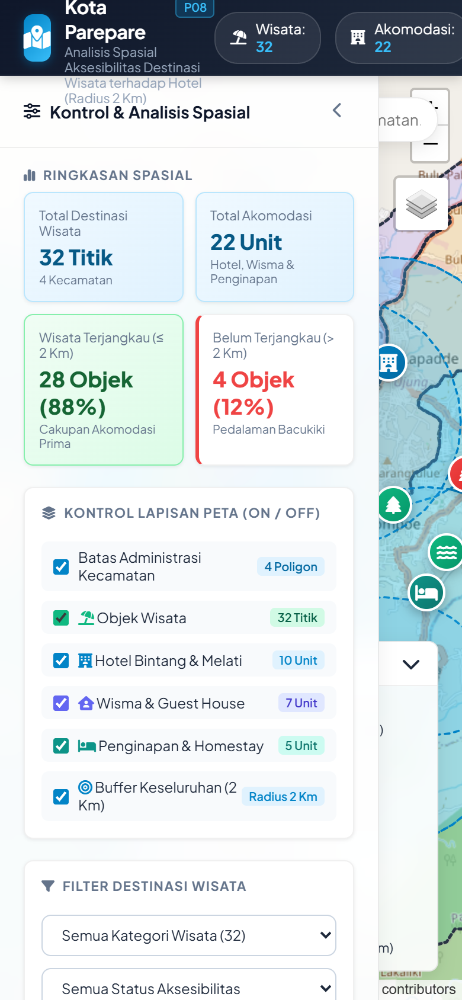

Gambar 1: Tampilan antarmuka WebGIS Kota Parepare dengan sebaran layer wisata, hotel, dan batas kecamatan.

Gambar 2: Analisis buffer 2 km per titik wisata (oranye) dan popup daftar hotel terdekat beserta jaraknya.
Dosen Pengampu: Andang Suryana Soma, S.Hut., M.P., Ph.D. • Semester Genap / Ganjil 2024–2025
| Nama / NIM | M. ARIEF ABDILLAH / V126241003 |
| Judul WebGIS | WebGIS Analisis Spasial Aksesibilitas Destinasi Wisata terhadap Fasilitas Akomodasi Hotel (Radius 2 Km) di Kota Parepare |
| Wilayah Kajian | Kota Parepare, Provinsi Sulawesi Selatan (Mencakup 4 Kecamatan: Bacukiki, Bacukiki Barat, Soreang, dan Ujung) |
| Cara yang Dipilih | Jalur A (Dengan Coding) — Menggunakan Stack: HTML5, CSS3 Glassmorphism, JavaScript (ES6+), Leaflet.js v1.9.4, Turf.js, Chart.js, dan Node.js HTTP Server. |
| Alamat / Tautan WebGIS |
• Live WebGIS (GitHub Pages): https://zeolit404.github.io/WebGIS_P08_Parepare/ • Tabel Atribut Online: https://zeolit404.github.io/WebGIS_P08_Parepare/tabel_atribut.html • Repositori GitHub: https://github.com/zeolit404/WebGIS_P08_Parepare • Server Lokal Pengujian: http://localhost:3000
|
| Tujuan (1 kalimat) | Menganalisis jangkauan aksesibilitas spasial fasilitas akomodasi perhotelan terhadap sebaran destinasi wisata di Kota Parepare menggunakan analisis buffer radius 2 kilometer guna memetakan objek wisata yang terlayani dan mendeteksi area blank spot. |
| Pengguna Sasaran | Dinas Kepemudaan, Olahraga, dan Pariwisata (Disporapar) Kota Parepare, Badan Perencanaan Pembangunan Daerah (Bappeda), Perhimpunan Hotel dan Restoran Indonesia (PHRI), calon investor pariwisata/akomodasi, serta wisatawan umum. |
| Pertanyaan 1 | Berapa persentase dan jumlah destinasi wisata di Kota Parepare yang berada di dalam jangkauan aksesibilitas hotel dalam radius 2 km? |
| Pertanyaan 2 | Kecamatan mana yang memiliki tingkat jangkauan akomodasi tertinggi (100%) dan di mana lokasi titik wisata yang belum terlayani akomodasi (blank spot)? |
| Pertanyaan 3 (Tambahan) | Fasilitas akomodasi hotel mana yang menjadi rujukan terdekat untuk tiap destinasi wisata, dan berapa jarak geodesik riilnya? |
| Platform/Alat yang Dipakai | Leaflet.js (v1.9.4), Turf.js (Geospatial Analysis Engine), Chart.js, Node.js HTTP Server, HTML5 Canvas/DOM, CSS3 Modern Glassmorphism. |
| Alasan Memilih | Berdasarkan pohon keputusan Modul Praktikum (Gambar 4), Jalur A (Dengan Coding) dipilih karena memerlukan pemrosesan spasial dinamis di sisi klien (geodesic buffer radius 2 km secara instan, kalkulasi jarak geodesik Haversine ke hotel terdekat, serta interaksi visual dua arah antara titik peta, popup, dan grafik Chart.js). |
| Kekurangan Platform | Memerlukan pemahaman arsitektur web, penulisan algoritma JavaScript, dan penanganan format koordinat secara mandiri dibandingkan dengan alat no-code/GUI seperti qgis2web, namun menawarkan kebebasan penuh dalam estetika antarmuka, performa kilat, dan fleksibilitas kustomisasi fitur. |
| No | Nama Layer | Geometri | Sumber & Tahun | Cara Memperoleh & Lisensi |
|---|---|---|---|---|
| 1 | Batas Administrasi Kecamatan | Polygon (4 fitur) | Ina-Geoportal Badan Informasi Geospasial (BIG), 2024 | Unduh data vektor RBI skala 1:50.000 via portal tanahair.indonesia.go.id. Lisensi Data Terbuka BIG. |
| 2 | Data Demografi & Luas Wilayah | Tabular (CSV/JSON) | BPS Kota Parepare ("Kota Parepare Dalam Angka 2024") | Ekstraksi data kependudukan dan luas per kecamatan dari publikasi resmi BPS Parepare. Lisensi Terbuka BPS. |
| 3 | Titik Destinasi Wisata | Point (32 fitur) | OpenStreetMap (OSM) & Disporapar Parepare (2024/2025) | Query data POI pariwisata (alam, sejarah, religi, kuliner/pantai) via OSM Overpass API & verifikasi koordinat. Lisensi ODbL. |
| 4 | Titik Fasilitas Akomodasi (Hotel & Wisma) | Point (22 fitur) | OpenStreetMap (OSM), PHRI & Direktori Parepare (2024/2025) | Ekstraksi seluruh unit akomodasi (10 Hotel, 7 Wisma/Guest House, 5 Penginapan/Homestay) di 4 kecamatan. Lisensi ODbL. |
| 5 | Buffer Jangkauan Akomodasi (2 Km) | MultiPolygon (Unified) | Hasil Olahan Turf.js (Geospatial Analysis) | Dibuat melalui pemrosesan buffer geodesik 2.000 meter terhadap 22 titik akomodasi dan digabung (union). |
| CRS Seluruh Layer | Seluruh data spasial ditransformasikan dan dipastikan berada dalam sistem koordinat standar web: WGS 84 (EPSG:4326) dengan koordinat lintang/bujur desimal. |
| Pemeriksaan Validitas Geometri | Poligon kecamatan diperiksa bebas dari self-intersection dan lubang (slivers). Koordinat titik wisata dan hotel dipastikan valid dan berada di dalam batas Kota Parepare (Lat: -4.08 s.d -3.96, Lon: 119.61 s.d 119.72). |
| Standardisasi Nama & Tipe Kolom | Field diseragamkan dengan huruf kecil tanpa spasi: nama (String), kecamatan (String), kategori (String), lat (Float), lng (Float), status_buffer (String), hotel_terdekat (String), jarak_ke_hotel_km (Float). |
| Pembersihan Duplikat & Data Kosong | Menghapus lebih dari 15 kolom bawaan shapefile lama yang kosong (KDPPUM, FCODE, METADATA, dll.) dan memverifikasi nol duplikasi (0 duplicate). Nilai kosong pada tarif/fasilitas diberi nilai default terstandar. |
| Kunci Penggabung Tabel | Field kecamatan digunakan sebagai relational foreign key untuk menggabungkan layer poligon spasial dengan tabel demografi BPS (luas, kepadatan, jumlah penduduk). |
| Penyimpanan & Distribusi | Disimpan dalam direktori data/ dalam format .geojson serta format .js (berisi variabel window) untuk mendukung mekanisme dual-loading bebas hambatan CORS browser lokal. |
| Nama Analisis | Analisis Buffer Jangkauan Fasilitas Akomodasi (Radius 2 Km) & Evaluasi Aksesibilitas Destinasi Wisata (Point-in-Polygon & Proximity Haversine) |
| Fungsi / Algoritma yang Digunakan |
1. turf.buffer(point, 2, { units: 'kilometers', steps: 64 }) — Pembuatan radius lingkaran geodesik 2 km.2. turf.union(...) — Penggabungan poligon buffer menjadi satu zona cakupan pelayanan terintegrasi.3. turf.booleanPointInPolygon(titikWisata, unifiedBuffer) — Validasi spasial keberadaan titik dalam buffer.4. turf.distance(titikWisata, titikHotel, { units: 'kilometers' }) — Perhitungan jarak terpendek ke seluruh hotel.
|
| Hasil Utama (Angka Kunci) |
• Total Destinasi Wisata: 32 Titik (Kecamatan Ujung: 10, Bacukiki Barat: 9, Bacukiki: 9, Soreang: 4). • Total Fasilitas Akomodasi: 22 Titik (10 Hotel, 7 Wisma/Guest House, 5 Penginapan/Homestay). • Tingkat Keterjangkauan Kota: 28 dari 32 objek wisata (87,5% ≈ 88%) berada dalam radius 2 km dari fasilitas akomodasi. • Area Belum Terjangkau (Blank Spot): 4 dari 32 objek wisata (12,5% ≈ 12%) berada di luar radius 2 km, seluruhnya berada di kawasan perbukitan dan lembah pedalaman Kecamatan Bacukiki (Salatiga Hills, Bendungan Lappa Angin, Puncak Bili-Bili, dan Pemandian Alam Bulu Langi). • Kinerja per Kecamatan: Kecamatan Ujung (100% terjangkau, 11 hotel), Bacukiki Barat (100% terjangkau, 6 hotel), Soreang (100% terjangkau, 3 hotel), Bacukiki (55,6% terjangkau, 2 hotel). |
| Verifikasi Hasil | Hasil perhitungan Turf.js diverifikasi secara manual menggunakan Leaflet Measure Tool dan cross-check koordinat GPS untuk memastikan akurasi jarak lurus. |

| Bentuk Penyajian | Aplikasi WebGIS Interaktif Full-Stack Client-Side dengan dukungan Server Node.js lokal dan deployment cloud di GitHub Pages, dilengkapi halaman sekunder Tabel Atribut & Rekap Analisis. |
| Langkah Singkat Pembuatan |
1. Arsitektur Data: Mengolah data vektor GeoJSON Parepare dan menyusun skrip build_datasets.js dengan Turf.js.2. Frontend Map Engine: Mengintegrasikan Leaflet.js dengan kontrol layer kustom, basemap switcher, dan search box. 3. Fitur Interaktif Buffer: Menulis logika klik destinasi wisata untuk memunculkan buffer 2 km spesifik, garis konektor ke hotel dalam radius, dan kalkulasi jarak instan di popup. 4. Dashboard Statistik: Membangun visualisasi Chart.js berupa dual-bar chart dan donut chart rasio keterjangkauan. 5. Tabel Atribut Eksternal: Membuat tabel_atribut.html dengan filter, deep-link "Buka Peta", ekspor CSV, dan cetak PDF.
|
| Elemen Wajib | Ada? | Keterangan & Implementasi pada WebGIS |
|---|---|---|
| Basemap | ✓ Ada | Disediakan 3 pilihan basemap: OpenStreetMap Standard, Esri World Imagery (Satelit Resolusi Tinggi), dan Esri World Topo Map. |
| Simbol & Warna Bermakna | ✓ Ada | Pin Hijau = Wisata Terjangkau Hotel (≤ 2 km), Pin Merah = Wisata Belum Terjangkau (> 2 km), Pin Biru Gedung = Hotel/Akomodasi, Area Cyan Transparan = Buffer Hotel, Lingkaran Oranye = Radius Wisata Aktif. |
| Popup Informatif | ✓ Ada | Menampilkan foto/kategori, jam buka, tiket masuk, status jangkauan hotel, nama hotel terdekat, serta daftar seluruh hotel yang berada dalam radius 2 km beserta jarak rincinya. |
| Legenda Peta | ✓ Ada | Floating legend panel di pojok kanan bawah dengan simbol warna dinamis dan tombol minimize/expand. |
| Judul & Identitas | ✓ Ada | Header navigation bar modern glassmorphism dengan judul lengkap dan badge praktikum P08. |
| Sumber Data | ✓ Ada | Dicantumkan di sidebar footer dan panel informasi: BIG, BPS Parepare, OpenStreetMap, dan Disporapar. |
| Fitur Interaktif 1: Pencarian Cepat | ✓ Ada | Search bar dengan autocomplete suggestion yang langsung melakukan flyTo animasi zoom dan otomatis membuka popup objek yang dicari. |
| Fitur Interaktif 2: Filter Ganda | ✓ Ada | Filter dinamis berdasarkan Kategori Wisata (Alam, Budaya/Sejarah, Kuliner/Pantai, Religi), Kecamatan, dan Status Keterjangkauan. |
| Panel Statistik / Grafik | ✓ Ada | Dashboard grafik interaktif Chart.js: Bar Chart komparasi fasilitas per kecamatan dan Donut Chart rasio keterlayanan hotel. |


| Item Pengujian | Hasil Pengujian & Verifikasi |
|---|---|
| Uji Lintas Browser | Berhasil diuji dan berjalan sempurna tanpa error pada Google Chrome v120+, Microsoft Edge v120+, dan Mozilla Firefox v122+. Seluruh tile basemap, marker custom SVG, dan canvas grafik dirender secara mulus. |
| Uji Responsivitas Layar Kecil / HP | Tata letak responsif: Pada layar smartphone (< 768px), sidebar berpindah menjadi panel modal / drawer yang dapat disembunyikan, ukuran tombol kontrol membesar untuk sentuhan jari (touch-friendly), dan peta tetap leluasa dijelajahi. |
| Validasi Sinkronisasi Angka | Angka pada ringkasan dashboard, tabel atribut, dan hasil analisis spasial 100% konsisten: Total 32 destinasi wisata, 22 akomodasi, 28 terjangkau (87,5%), 4 belum terjangkau (12,5%). |
| Publikasi Cloud Publik |
Telah berhasil dipublikasikan secara daring via GitHub Pages: • URL Aplikasi WebGIS: https://zeolit404.github.io/WebGIS_P08_Parepare/ • URL Repositori Kode Sumber: https://github.com/zeolit404/WebGIS_P08_Parepare |
| Tautan Video Demonstrasi | Video demonstrasi fitur (durasi ≤ 3 menit) mencakup demo pencarian, interaksi buffer 2 km, filter layer, dan tabel atribut: [Tersedia pada repositori GitHub & folder pengumpulan]. |

| Jawaban atas Pertanyaan Analisis (A1) |
Berdasarkan hasil analisis spasial terintegrasi terhadap 32 destinasi wisata dan 22 fasilitas akomodasi perhotelan di Kota Parepare:
|
| Kendala Terbesar & Cara Mengatasi |
Kendala: Inkonsistensi data batas administrasi shapefile regional yang mencakup wilayah kabupaten tetangga serta keterbatasan izin CORS browser saat membuka file GeoJSON lokal secara langsung. Solusi: Melakukan filter dan transformasi geometri khusus 4 kecamatan murni Parepare melalui skrip otomatis Node.js (Turf.js), serta menerapkan arsitektur dual-loading (GeoJSON + JavaScript global variable) sehingga WebGIS dapat dibuka baik melalui HTTP server lokal, GitHub Pages, maupun langsung klik ganda pada file HTML. |
| Rencana Pengembangan Lanjutan |
Jika diberikan alokasi waktu dan sumber daya lebih lanjut, fitur yang sangat bermanfaat untuk ditambahkan adalah:
|
|
Laporan ini disusun dengan sebenar-benarnya berdasarkan hasil pengerjaan mandiri dan pengolahan data spasial orisinal pada Praktikum Pengelolaan Big Data dan WebGIS. |
Makassar / Parepare, 5 November 2026 M. ARIEF ABDILLAH NIM. V126241003 |